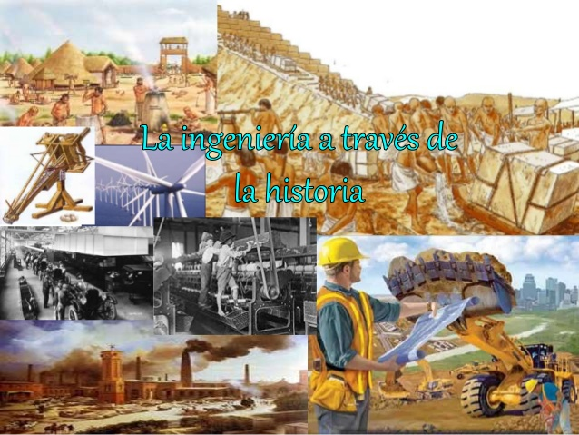

La historia de la civilización es en cierto modo, la de la ingeniería: largo y arduo esfuerzo para hacer que las fuerzas de la naturaleza trabajen en bien del hombre.
Los primeros hombres utilizaron algunos principios de la ingeniería para conseguir sus alimentos, pieles y construir armas de defensa como hachas, puntas de lanzas, martillos etc.
Pero el desarrollo de la ingeniería como tal, comenzó con la revolución agrícola (año 8000 A.C.), cuando los hombres dejaron de ser nómadas, y vivieron en un lugar fijo para poder cultivar sus productos y criar animales comestibles. Con el tiempo en esta civilización aparecería la ciencia.
Los primeros ingenieros fueron arquitectos, que construyeron muros para proteger las ciudades, y construyeron los primeros edificios para lo cual utilizaron algunas habilidades de ingeniería.
Seguidos por los especialistas en irrigación, estos se encargaron de facilitar el riego de las cosechas, pero como las mejores zonas para cosechar eran frecuentemente atacadas, aparecen los ingenieros Militares encargados de defender las zonas de cosecha y las ciudades. Se destaca la importancia que la comunicación a tenido en el desarrollo. Así las poblaciones ubicadas a lo largo de rutas comerciales desde China a España progresaron mas rápidamente por que a estas les llegaba el conocimiento de innovaciones realizadas en otros lugares.
En los últimos tres siglos la ciencia y la ingeniería han avanzado a grandes pasos, en tanto que antes del siglo XVIII era muy lento su avance.
Los campos mas importantes de la ingeniería aparecieron así: militar, civil, mecánica, eléctrica, química, industrial, producción y de sistemas, siendo las ingeniería de sistemas uno de los campos mas nuevo.
Fue la necesidad quien hizo a los primeros ingenieros. La primera disciplina de ingeniería fue: la ingeniería militar se desarrollo para ayudar a satisfacer una necesidad básica de supervivencia. Cada periodo de la historia ha tenido distintos climas sociales y económicos, así como presiones que han influido grandemente tanto el sentido como el progreso de la ciencia y de la ingeniería. Es preciso recordar que durante nuestro crecimiento aprendemos a considerar normal quizá no sea más que una moda pasajera social o económica que representa un punto en el tiempo.
Fue la necesidad quien hizo a los primeros ingenieros. La primera disciplina de ingeniería fue: la ingeniería militar se desarrollo para ayudar a satisfacer una necesidad básica de supervivencia. Cada periodo de la historia ha tenido distintos climas sociales y económicos, así como presiones que han influido grandemente tanto el sentido como el progreso de la ciencia y de la ingeniería. Es preciso recordar que durante nuestro crecimiento aprendemos a considerar normal quizá no sea más que una moda pasajera social o económica que representa un punto en el tiempo.